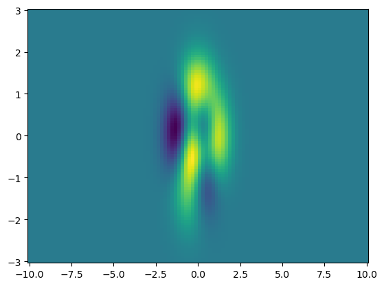
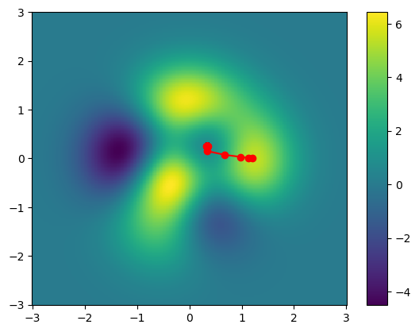

#Some packages needed throughout the article
import torch
from torch import nn, optim
from torch.utils.data import Dataset, DataLoader
import numpy as np
import matplotlib.pyplot as plt
%matplotlib inlineA Gentle (Mathematicians) Introduction to PyTorch and Neural Networks Part 02
Todo: Change intro
In this blog posts, I’d like to introduce a commonly used optimizer for training models such as the logistic model we introduced in the last post.
The structure of this post is as follows: First, we familiarize ourselves a bit with the PyTorch framework. To build on this newly gained knowledge, we build a logistic model with PyTorch and gain some understanding about the binary cross-entropy loss in a theoretical setting. In the final part we will learn how to train our logistic regression model to achieve a good fit on given data.
(Stochastic) gradient descent
(Stochastic) Gradient Descent
N=100
X = np.linspace(-2,6,N)
def f(x):
return (x-2)**2def gd_1d(epochs ,lr ,f ,x):
coord = []
for epoch in range(epochs):
loss = f(x)
coord.append([x.data,loss.data])
loss.backward()
x.data = x.data - lr * x.grad.data
x.grad.data.zero_()
return np.transpose(np.reshape(coord,(epochs,2)))x0 = torch.tensor(-1.0,requires_grad=True)
lr = 0.1
epochs = 20
coord = gd_1d(epochs,lr,f,x0)
show_plt = False
if show_plt is True:
plt.plot(X,f(X))
plt.plot(coord[0],coord[1],'-or')
plt.xlim((-2,6))
plt.ylim((-2,10))def f(x):
return 0.5*(0.75*x-1.2)**4-2*(0.75*x-1)**2+2x0 = torch.tensor(-1.0,requires_grad=True)
lr = 0.1
epochs = 20
coord = gd_1d(epochs,lr,f,x0)
show_plt = False
if show_plt is True:
plt.plot(X,f(X))
plt.plot(coord[0],coord[1],'-or')
plt.xlim((-2,6))
plt.ylim((-2,10))x0 = torch.tensor(-1.0,requires_grad=True)
lr = 0.40
epochs = 20
coord = gd_1d(epochs,lr,f,x0)
show_plt = False
if show_plt is True:
plt.plot(X,f(X))
plt.plot(coord[0],coord[1],'-or')
plt.xlim((-2,6))
plt.ylim((-2,10))Y = np.linspace(-3,3,N)
def f(x, y):
res = 2*(2-x)**2*(np.exp(-1*(x**2)-(y+1)**2))-15*(1/5*x-x**3-y**3)*np.exp(-x**2 - y**2)-1/3*np.exp(-(x + 1)**2 - y**2)
return res
f = np.vectorize(f)
XX,YY = np.meshgrid(X,Y)
ZZ = f(XX,YY)
plt.pcolor(XX, YY, ZZ)<matplotlib.collections.PolyCollection at 0x1ab1a437d60>
def f_(x,y):
return 2*(2-x)**2*(torch.exp(-1*(x**2)-(y+1)**2))-15*(1/5*x-x**3-y**3)*torch.exp(-x**2 - y**2)-1/3*torch.exp(-(x + 1)**2 - y**2)def train_model_GD(iter,lr,f,x1,x2):
COORD = []
for epoch in range(iter):
loss = f(x1,x2)
COORD.append([x1.data,x2.data,loss.data])
loss.backward()
x1.data = x1.data - lr * x1.grad.data
x2.data = x2.data - lr * x2.grad.data
x1.grad.data.zero_();x2.grad.data.zero_()
return np.transpose(np.reshape(COORD,(n,3)))print(f_(x1,x2))tensor(5.3972, grad_fn=<SubBackward0>)n = 1000
lr = 0.05
x1 = torch.tensor(1.2, requires_grad=True)
x2 = torch.tensor(0.0, requires_grad=True)
COORD = train_model_GD(n, lr, f_, x1, x2)
plt.pcolor(XX, YY, ZZ)
plt.plot(COORD[0], COORD[1], 'o-r')
plt.colorbar(shrink=1, aspect=14)
plt.show()